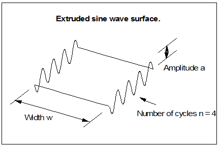

| |
Implementing an FG System |
| <<< Introduction and Summary | Chapters | Modeling using Foreign Geometry >>> |
This chapter explains the process whereby the user creates FG evaluators and links them into Parasolid. An overall description of this procedure is given in Chapter 1, “Introduction and Summary”.
Let’s start by taking an example of a surface for which we want to write an evaluator:
P( u, v ) = ( u, v, a sin(2 pi u) ) |
generates an extruded sine wave surface. If we further allow the parameter ranges to be:
U in the range [ 0, n ]V in the range [ 0, w ] |
then we generate the surface shown in the diagram below:
To implement an evaluator function for this surface we have to make some basic design decisions :
EDS/corrugated
(the key should give an indication of the source of the evaluator - in this case Electronic Data Systems)The tasks we have to complete in order to implement this surface are :
Our surface is requested by a call to function PK_FCURVE_create. The arguments to this function should be:
EDS/corrugated
This call generates a call to the function FGCRSU with essentially the same arguments, except that a double array of length 1 has been allocated by Parasolid for initialization by FGCRSU.
In FGCRSU a section of code is added to recognize our corrugated surface and enable evaluations of it. The code which achieves this is :
|
Note:
1. The function FGCRCU performs the initialization of curve evaluators, receiving the same arguments and performing the same tasks. Note: 2. The function
keycmpu
does a string comparison between the supplied key and the valid key for our surface. This function is part of the sample code. A straightforward C string comparison does not work here since, for FORTRAN compatibility reasons, the key has no standard C null terminator.Note: 3. It is at this point in the code that any validation of data needs to be implemented - a successful call to FGCRSU should indicate that valid evaluations are available. In this case three real data items must be available of which the final two (the number of cycles, n, and the width of the surface , w) need to be positive. If the real data supplied through the interface does not fit this form, then the ifail return code is set to FGRERR to indicate unsatisfactory real data. Note: 4. The type definition surface_evaluator is: typedef void (* surface_evaluator)() Once the data has been validated, the address of the evaluator function is stored in the fg_data space that was requested. The evaluator is called by a call to this address. All future references to this evaluator (by functions FGPRSU, FGEVSU) are made by passing the fg_data array, as initialized here - the key is no longer supplied. Note: 5. If an evaluator is written which uses secure data stored in the fg_data array, FGCRSU needs to implement the loading of this data. Evaluators of this type should have a key which itself contains the filename/database entry where the data can be found. For example, a key
EDS/Gordon/Example1
could indicate that the Gordon surface evaluator should be used with data loaded from file
Example1
. Note: 6. FGCRSU is only called once per FG surface. The structure of our example could get unwieldy if many tens or hundreds of surfaces were implemented. In this case some means of avoiding a lot of string comparisons would be useful, but is not critical. Note: 7. FGCRSU is called whenever a foreign surface is to be initialized for use in Parasolid. This can happen directly when a user calls up a new foreign surface using PK_FSURF_create, or indirectly when a user loads an archived part into Parasolid using PK_PART_receive, when FGCRSU is called once for every foreign surface present in the part. |
Once a surface is successfully initialized by a call to FGCRSU, a call is made to function FGPRSU so that Parasolid can be informed of the parametric properties of the surface. In our example code the relevant code is :
Evaluations of surfaces are routed through function FGEVSU. In our example this is implemented as :
The evaluator call supplies arguments as follows :
Let’s look at a section of the sample
corrugated
evaluator code:
if ( su_dP_du( &n, *nu, *nv, *triang )){ /* compute : Pu */ results[n++] = 1.0; results[n++] = 0.0; results[n] = two_pi * A * cos(*u * two_pi);} |
and later on after all evaluations are complete...
*ifail = su_check_params( *ifail, *nu, *nv, *triang ); |
The results of an evaluation are returned in the
results
array passed down to the evaluator. The specification of the numbers of derivatives required is supplied by means of the
nu
,
nv
and
triang
arguments. The meanings of these is as follows:
results
array should be considered as an array of vectors each of which is stored in 3 successive locations in the array. For example, if 6 results are required then the
results
array is 18 doubles long.
nu
,
nv
and
triang
specify the derivatives required, and their positions in the
results
array as follows:
triang
is FGEVSQ. In this case a rectangular array of derivatives is required.
nu
specifies the highest derivative of form dnP/dun that is required.
nv
specifies the highest derivative of form dnP/dvn that is required. Other entries are according to the pattern ‘
each successive column is a higher derivative in u and each successive row is a higher derivative in v’. Thus, for example, if nu=2 , nv=1 and triang=0 then the results array looks as follows:
results
array in row order. For example, counting from position 0 (in Fortran add 1 to these positions):
dP/du is stored in elements 3-5 of the
results
array.
d2p/dudv is stored in elements 12-14 of the
results
array.
triang
argument may only take the value FGEVTR when nu = nv. In this case the array pattern is triangular and returned in row order. For example, if nu=nv=2 and triang=1 the pattern of the results array is as follows:
P dP/du 2P/du2dP/dv d2P/dudvd2P/dv2 |
In Parasolid the style of implementation used for FG is as shown in the supplied example source code and detailed in this chapter. We have found it to be a fast and straightforward interface to use. We have an advantage here in that we are generally writing FG evaluators from scratch. We have designed the FG interface to be as compatible as possible with other FG systems that we have encountered as well as being already specified in a form that allows us to increase the range of curve and surface types that are implementable as FG.
Parasolid does not replace users’ evaluators with internal approximations: it must always request spatial information regarding external curves and surfaces by calling FGEVCU and FGEVSU respectively in order to model exactly. Therefore it is essential that the user codes these functions as efficiently as possible since any delay in returning information to Parasolid is directly reflected in the speed of modeling using FG.
A simple evaluator may be designed to generate a single specific curve or surface. In this case no information other than parameter positions is required by the evaluator in order for it to be able to supply positions and derivatives.
However, we imagine that developers will more typically choose to write general purpose evaluators capable of generating whole families of curves or surfaces. In these cases the evaluators will require additional data to specify the particular example required.
Parasolid provides two distinct means to supply this sort of data to evaluators as arguments to the function which specifies the required curve or surface or from data supplied by the FG module when the curve or surface is initialized.
The interface allows the user to supply an array of real numbers and/or an array of integers to the evaluator. In most cases this is the preferred method of supplying data:
The interface additionally allows the user to specify an area of memory which is filled by the FG module call which requests that the FG item specified by the interface call be initialized. This data :
There is one specific use of such data which is inherent in the design of the FG interface. All evaluation requests leave Parasolid as calls to functions FGEVCU or FGEVSU. These functions therefore need to be able to route these requests to the appropriate evaluator function.
It would be possible to design these functions to switch to evaluators based upon the key supplied to the interface. However, performance considerations indicate that this is a very inefficient mechanism, particularly if many evaluators are linked into Parasolid. The interface therefore requires that at least space for one double is requested. This first element of the Frustrum array is intended to be used to implement this switch between evaluators.
In the example discussed below the address of the evaluator function is stored. This is an efficient method of implementing this switch in C but other methods such as a stored integer used in a Fortran computed GOTO statement are equally valid.
There is no format which is enforced for keys by Parasolid. However, we believe that the opportunities that the FG facilities create for extending the geometrical repertoire of Parasolid may find widespread applications. We need to provide support facilities for users of such geometry that meet Parasolid's high customer support standards. In order to do this we need to be able to identify the originators of FG evaluators. We propose a standard for keys as follows:
key = <company_identifier> / <evaluator_name> / <data_source>
fg_data
route for input need to use the <data_source> component
EDS/corrugated
Example_data
would have key
ABC/Coons/Example_data
The Foreign Geometry interface comprises six functions:
Missing from this list are functions to ‘release’ curves and surfaces that Parasolid has no further need of. The reason for this omission is that the decision as to when to release an evaluator is a complicated one since it depends on such things as copying geometry, the existence of dependent geometry and the Parasolid rollback mechanism. To attempt this would require much of the rollback mechanism to be implemented inside the Frustrum and would force all customers to rewrite their Frustrums, whether using foreign geometry or not. UGS reserves the right, however, to implement this in future releases, as this change in functionality is more generally useful.
The FG module must be linked into Parasolid to allow the user access to their curves and surfaces defined therein. The details of how to do this are machine specific but the principle is straightforward.
Command scripts are provided with the Parasolid release enabling the user to link the supplied example FG module together with Parasolid to form a customized version of KID.
| <<< Introduction and Summary | Chapters | Modeling using Foreign Geometry >>> |